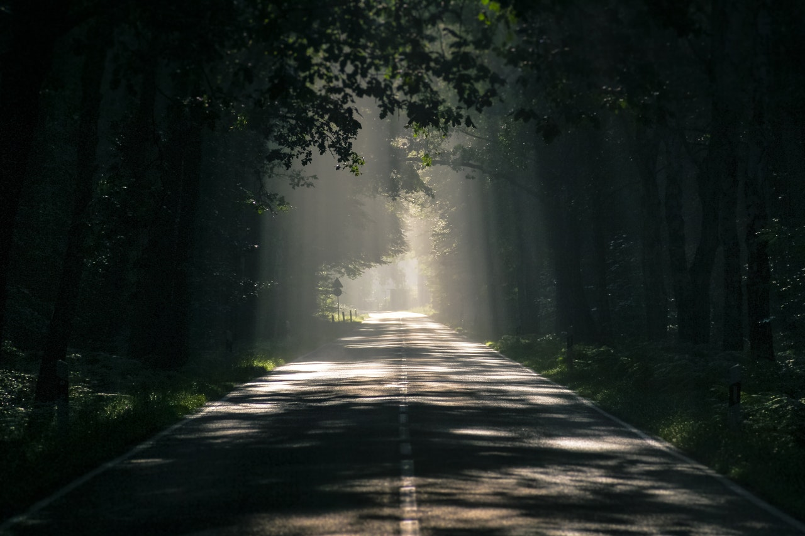
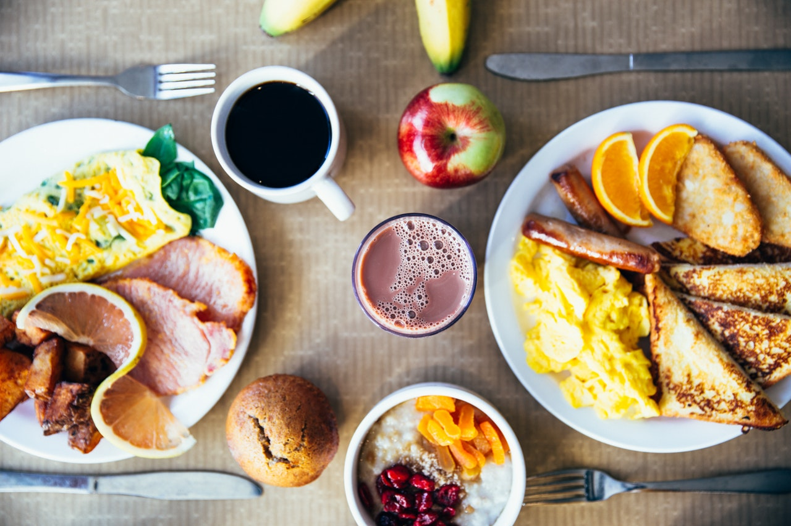

Mountain Views
Forest, May 23, 2017
One of the few things I enjoy doing is going hiking! It's really fun and a good way to rejuvenate. I also want to travel because there's many locations to explore. I take a few trips to any trail or forest whenever I have the time.
My Type Of Foods
Breakfast, Sep 4, 2018

I enjoy eating food, who doesn't right? I also enjoy trying
different types of food if it sparks my interest.
I also have my regular to go to foods, which include Burgers, Pizza,
and FRIES!!!!